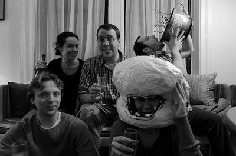

Thank you very much to everyone who showed up for our very special Ash Wednesday installment of the Indian Road Cafe Pub Quiz - it's always fun to have a full house. To all of you that weren't there (you know who you are, you know you were wrong, and you know you should make it right), we're sorry you missed out on an evening of raucous fun and great prizes.
Last night we were joined by Chris and Damian, of Bronx Brewery fame, who brought with them some great looking shirts, hats, and pint glasses (suitable for filling with their upcoming cask-conditioned Bronx Pale Ale) as prizes for the night.
Speaking of the Bronx, did you know that the biggest park in NYC is located in that fair borough (and it's not Van Cortland Park)? You did, eh? Well I guess you're hard to stump then. You probably would have done well on the foods that start with "L" round. In fact everyone did so well on that round that we were forced to award prizes to the teams that didn't get perfect scores. Let that be a lesson to all you over-achievers. After that we catered to both of our key demographics at once with a round on Shakes-beer, including a question about Shakespeare's personal favorite brew from Rogue.
After the half, we got back to pub quiz standard fare with a round of presidential trivia that narrowly avoided being entirely male by including a question about Nicaragua. (As an aside, I still hear some tittering whenever we ask questions about titular characters - thanks.) In the punctuation round, we heard how Kurt Vonnegut really feels about the semicolon; basically, he's against it. Finally we surprised everyone in the room by finishing off the night with something called "The Common Bond" round, wherein the secret connection tying all the questions together was everybody's favorite drinking game, Rock Paper Scissors.
After OJ finished admiring the artwork submitted by all the teams, we awarded the nightly prize of a $25 gift certificate to newcomers Some Kind of Browns, who finished the night with an impressive 54 points. Our congratulations go out to them, and we hope to see them come back for more next week.
Which reminds me, next week is the final week of the month of February. Be sure to come early for a table, because there will surely be a crowd for the crowning of the monthly winners and the awarding of the Quizmasters' Cup. Here's a picture of last month's winners celebrating with the cup.

If you get the most points for the month, this could be you. (I've just reviewed the score sheet, and it looks like they're in position to win for this month as well, so maybe it won't be you.) Anyway, If you can't stand to see your beloved Quizmasters' Cup in their hands for a second month in a row, I suggest bringing your A games next week to close the points gap. See you then!

Re: "If you get the most points for the month, this could be you. (I've just reviewed the score sheet, and it looks like they're in position to win for this month as well, so maybe it won't be you.)" hahahahahahaha...... nice recap. :)